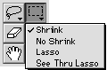
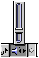

Bevel Buttons as Pop-up Buttons
A bevel button can be used as a pop-up button with or without a menu.When a bevel button behaves as a pop-up menu button, the user clicks on the bevel button to display a pop-up menu directly below or to the right of the button. If used as a standard menu, the menu closes immediately after the user releases the mouse button. If you enable sticky menu behavior, the menu remains displayed after the user clicks on the button. The section on "Pop-Up Menu Buttons" (page 24) describes this more fully. Figure 2-15 shows an example of a pop-up bevel button with a sticky menu.
Figure 2-15 A pop-up bevel button with sticky menu

You can also set up a bevel button which, if the user clicks once, simply turns on the function represented by the button, but if pressed for longer than the user-set double-click time, displays a pop-up menu which offers further options for that function. This behavior is useful for providing option sets in tool palettes.
You can specify that a pop-up bevel button displays either a small or large arrow to indicate its pop-up behavior. These arrows can be either horizontally or vertically oriented. Figure 2-16 shows pop-up bevel buttons with large horizontally-oriented arrows. Figure 2-15 shows pop-up bevel buttons with small vertically-oriented arrows.
Figure 2-16 shows a pop-up bevel button that serves as a standard pop-up button with a slider instead of a menu.
Figure 2-16 A pop-up bevel button used with a slider
